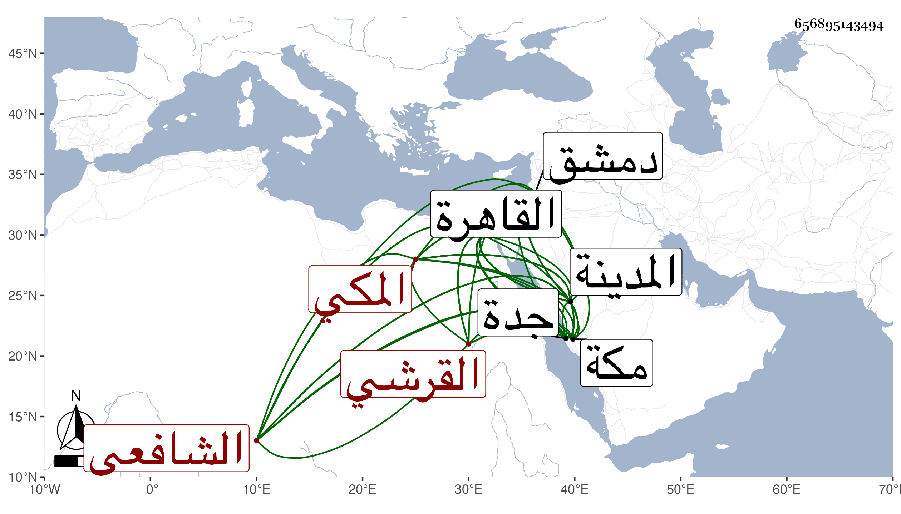

0902Sakhawi.DawLamic.ITO20230111-ara1.EIS1600.656895143494
Biography ID: 656895143494
72
العباس بن محمد بن محمد بن محمد بن حسين بن علي بن أحمد بن عطية بن ظهيرة الكمال أبو الفضل بن الجمال أبي المكارم بن الكمال أبي البركات القرشي المكي الشافعي والد عبد الله الآتي ويعرف كسلفه بابن ظهيرة ويسمى أيضا محمدا ولكنه بكنيته أشهر منه باسمينه . ولد في ثاني ربيع الأول سنة خمس عشرة وثمانمائة بالقاهرة وحمله أبوه إلى مكة فنشأ بها وسمع من ابن سلامة والجمال محمد بن علي النويري وابن الجزري وأحمد بن إبراهيم المرشدي وأخيه الجمال محمد ومحمد بن أبي بكر المرشدي والتقي بن فهد وعمه أبي السعادات وأبي الفتح المراغي وآخرين وأجاز له محمد بن أحمد بن محمد بن مرزوق والتقي الفاسي ومن المدينة الجمال الكازروني والنور المحلي وطاهر الخجندي والمحب المطري وغيرهم ودخل القاهرة غير مرة منها في سنة إحدى وخمسين وسمع على شيخنا في المحدث الفاضل وغيره وكذا دخل دمشق وغيرها وناب في القضاء بجدة عن عمه أبي السعادات في سنة خمسين وغيرها ثم استقل بها في سنة سبع وخمسين عوضا عن ابن عمه الكمال أبي البركات بن علي ثم عزل في أوائل التي تليها وسافر إلى المدينة للزيارة فأقام بها يسيرا ثم مات بها بعد مرض طويل في يوم الأحد خامس رجب سنة أربع وستين وصلى عليه ضحى يوم الاثنين بالروضة الشريفة ، وكان فاضلا ذكيا جيدا لمحاضرة مليح الشكل كريم النفس محببا إلى أهله وأقاربه تزوج ابنة عمه أم هاني ابنة علي وقدر بعد دهر موتها بالمدينة أيضا رحمهما الله وإيانا .
